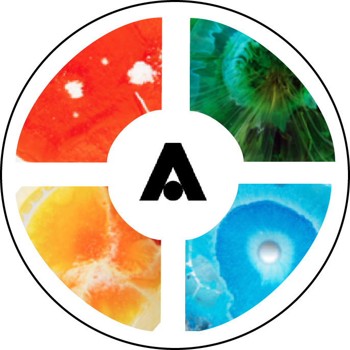

ATLAS 2300: Text
In this class we learned about the importance of good and bad design through the lense of typography. The class was done entirely through Adobe Illustrator and Adobe InDesign.
Lab Assignments:
Sticker: The sticker we design needs to capture the look and visual style of a specific decade of promotional design for a certain ATLAS Institute lab. Mine was 80s and the Living Matter Lab.
Elements of Design: Create a series of abstract, black & white compositions that explore the dichotomies of the given words (words are written in the bottom right hand corner of each page)
Knowing your Type: Using lines, demonstrate baseline, cap height, x-height, ascender & descender lines, mark the location of terminals, counters, ascenders, descenders, and any other anatomical.
Expressive Type: Create six engaging word compositions, arranging words to visually express their meaning.
Type Specimen Poster: Create a type specimen poster for the typeface of your choice.
Signs for Nouns: Create sets of vector based, black & white, pictographic signs that represent the following four nouns: CHILD, BATHROOM, POISON, RADIOACTIVITY
Cookbook: Create sets of vector based, black & white, pictographic signs that represent the following four nouns: CHILD, BATHROOM, POISON, RADIOACTIVITY
Projects:
Project 1: Design a printed accordion that typographically expresses a song lyric or poem of your choosing. This represents Dreams by Fleetwood Mac to me.
Project 2: Create an informational poster mailer for the Colorado Symphony concert schedule